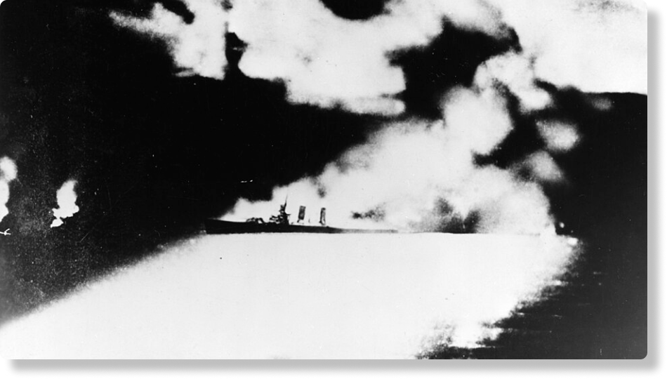
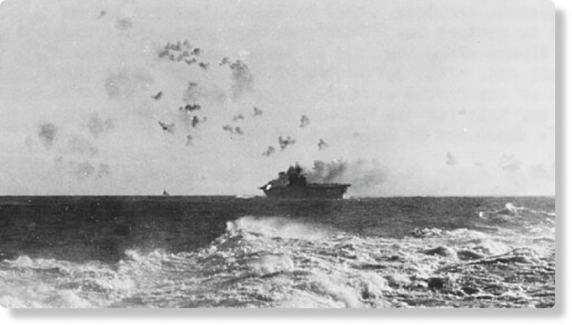
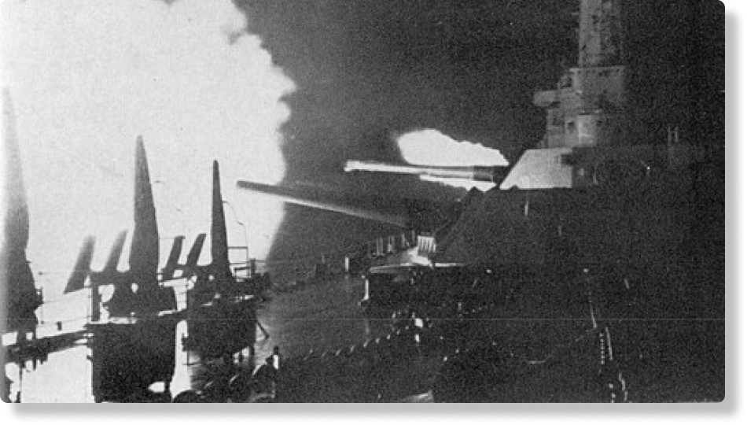

A campanha das ilhas de salomão junto com A batalha de midway são os dois eventos cruciais na Segunda Guerra Mundial, no Pacífico

Fuzileiros navais americanos patrulhando as margens do rio Matanikau, em Guadalcanal, em setembro de 1942.
A Campanha das Ilhas Salomão, também conhecida como Batalha de Guadalcanal, foi um importante conflito da Segunda Guerra Mundial, ocorrido entre 1942 e 1943. Embora tenha abrangido várias ilhas do arquipélago de Salomão, os combates mais intensos e decisivos aconteceram na ilha de Guadalcanal, tornando-a o principal foco da campanha. Ela foi travada entre as forças japonesas e forças aliadas (sendo principalmente Estados Unidos), em que as forças aliadas, lideradas pelos EUA, lançaram sua primeira ofensiva estratégica contra o Japão a fim de capturar um campo de aviação (Henderson Field) em construção e impedir a expansão japonesa no Pacífico.
A operação se estendeu por seis meses, transformando-se em uma longa campanha que envolveu intensos combates entre navios e aeronaves da Marinha dos EUA, além das forças terrestres e aéreas do Corpo de Fuzileiros Navais e do Exército, contra a resistência japonesa tanto em terra quanto no mar.
Contexto Rápido: Guerra do Pacífico Segunda Guerra Mundial
Localização: Sudoeste do Oceano Pacífico, a nordeste da Austrália. Coordenadas: 9° 37' 2" S, 160° 11' 19" E
Data(s): Agosto 1942 – Fevereiro 1943
Envolvidos: Forças Japonesa e Forças Aliadas

7.100 mortos
7 789+ feridos
4 capturados
29 navios afundados
615 aeronaves abatidas
10.000 fuzileiros navais

19.200 mortos
1 000 capturados
38 navios afundados
683 aeronaves abatidas
Guadalcanal é uma ilha localizada a 5.500 km do Japão. Estando entre a rota entre os Estados Unidos e Austrália, a Marinha Japonesa criou um campo de aviação no local em julho de 1942, utilizando-o como base de linha de frente para impedir a colaboração entre as duas nações. Japão havia desembarcado na Nova Guiné, que era território australiano, e estavam intensificando sua ofensiva contra a Austrália.
No entanto, quando o aeródromo estava quase finalizado, uma força imensa de mais de 10.000 fuzileiros navais americanos desembarcou e conquistou a ilha rapidamente. Os japoneses tentaram retomar o controle, mas cometeram um erro grave de avaliação. O Quartel-General Imperial em Tóquio, responsável pelo planejamento operacional, acreditava que um contra-ataque americano não ocorreria antes de 1943 e subestimou a força americana, estimando-a em cerca de 2.000 soldados.
A imagem mostra um mapa do Oceano Pacífico, destacando a localização das Ilhas Salomão (ガダルカナル島 - "Ilha Guadalcanal" em japonês)
entre a Austrália (オーストラリア) e os Estados Unidos (アメリカ).
Em 7 de agosto, os militares americanos desembarcaram.
Com 900 homens, levemente armados. Eles foram aniquilados pelo poder de fogo das forças americanas. Em seguida, mobilizaram o Destacamento Kawaguchi,
a 2ª Divisão e a 38ª Divisão, mas todos foram derrotados.
Subestimaram o poder dos inimigos.
"As estratégias do exército e da marinha do Japão não se alinharam e eles não conseguiram concentrar suas forças"
disse o tenente-coronel Tatsushi Saito (60), do Instituto Nacional de Estudos de Defesa.
Início da invasão aliada: Tropas dos EUA desembarcam em Guadalcanal, Tulagi e Florida, começando a ocupar a ilha para impedir o controle japonês.
Vencendo a batalha naval e causando grandes perdas aos Aliados, o almirante japonês Gunichi Mikawa perdeu a chance de destruir os navios de transporte, que levavam suprimentos e reforços para os americanos em Guadalcanal.
Enfrentamento aéreo e naval entre porta-aviões aliados e japoneses, com perdas significativas para ambos os lados.
Forças navais japonesas tentam reforçar suas tropas em Guadalcanal, mas são interceptadas e sofrem pesadas baixas.
Foi uma batalha terrestre, marítima e aérea da campanha do Pacífico da Segunda Guerra Mundial. A batalha foi a última das três grandes ofensivas terrestres conduzidas pelos japoneses durante a campanha de Guadalcanal .
Combate decisivo entre forças navais aliadas e japonesas, resultando na destruição de vários navios de guerra japoneses e no fortalecimento da posição aliada na ilha.
As forças japonesas evacuam Guadalcanal após pesadas derrotas, encerrando a campanha com vitória da força aliada.
A imagem é um mapa da Ilha de Guadalcanal e das ilhas circundantes (como Florida, Tulagi, Savo, Gabutsu-Tannabogo e Malaita), datado de 5 de agosto de 1942. O mapa detalha as "Posições do Exército Japonês" e os "Postos de Observação do Exército Japonês" na ilha de Guadalcanal e nas ilhas vizinhas, como a Ilha de Florida e a Ilha de Tulagi. O Cabo Lunga refere-se a Lunga Point.

A ilha de Guadalcanal tinha terreno de selva densa, clima tropical inóspito (calor, humidade e mosquitos), terrenos pantanosos, uma batalha em um campo selvagem, onde uma maior parte morria por malária(uma doença infecciosa aguda causada por um parasita, transmitido pela picada da fêmea do mosquito ).
Cerca de mais 20.000 soldados japoneses morreram durante o período de guerra, porém estima-se que 15.000 morreram devido à fome e doenças pela falta de suprimentos, aproximadamente 70%. Este caso foi levado à ilha Guadalcanal, a ser apelidada de “ilha da fome”. Nas doenças inclui malaria, diarreia, inação, etc.

Tsuji foi mandado para Guadalcanal no final de 1942, ele planejou e liderou o último ataque japonês em 23 e 24 de outubro. Depois que os ataque foram derrotados, foi pessoallmente pedir reforços adicionais. Mas ele então aceitou a conclusão da Marinha de que nada poderia passar para a ilha e recomendou a evacuação das tropas restantes. Ele impressionou o imperador com sua franqueza; mas o fiasco de Guadalcanal o desacreditou.

Liderou seus navios como grupo de vanguarda na Batalha das Ilhas Salomão Orientais, de 23 a 25 de agosto de 1942 Hiroaki Abe foi vice-almirante da Marinha Imperial Japonesa. Em novembro de 1942, comandou a força enviada para bombardear o Campo Henderson durante a Primeira Batalha Naval de Guadalcanal. Apesar de ter superioridade inicial, não conseguiu cumprir a missão e recuou. Essa hesitação custou caro ao Japão e levou à sua destituição do comando, marcando o fim de sua carreira relevante na guerra.

Em 7 de agosto, ele liderou o desembarque das tropas americanas em Guadalcanal e em outras ilhas do arquipélago das Salomão, dando início à primeira grande ofensiva dos Aliados contra o Japão na Guerra do Pacífico.

Na campanha de Guadalcanal, o contra-almirante Richmond Kelly Turner comandou a Força Anfíbia do Pacífico Sul (ComPhibForSoPac), ou Força-Tarefa 62, composta por nove grupos, entre eles a Força de Desembarque, liderada pelo major-general Alexander Vandegrift, e o Grupo de Triagem, sob o contra-almirante Victor Crutchley, da Marinha Real. Turner conduziu as operações ao longo dos cinco meses da campanha até a vitória final, apesar de enfrentar derrotas significativas, como a da Ilha de Savo.
A Batalha de Guadalcanal terminou em fevereiro de 1943 com a retirada japonesa, após meses de combates por terra, mar e ar. Os Aliados conseguiram manter o controle do aeródromo de Henderson Field e se consolidaram na ilha, garantindo a vitória contra o Japão no Pacífico. As perdas foram pesadas para ambos os lados, mas muito mais severas para os japoneses aproximadamente 20.00 mortos, muitos deles vítimas não apenas dos combates, mas também da fome e das doenças que devastaram suas tropas. Os Aliados também sofreram bastante, com aproximadamente 7 mil mortos e vários navios afundados, mas tinham capacidade de reposição muito superior.
As consequências dessa vitória foram profundas. A partir de Guadalcanal, os japoneses perderam a iniciativa estratégica e passaram para uma postura defensiva, enquanto os Estados Unidos e seus aliados assumiram o controle do ritmo da guerra. Tropas experientes e oficiais de elite japoneses foram aniquilados, enfraquecendo o poder militar do país, que já não conseguia repor navios e aviões na mesma proporção que os americanos. Para os Aliados, a conquista da ilha foi um marco psicológico e estratégico: provava que o Japão podia ser derrotado em combates prolongados e fornecia uma base avançada para novas ofensivas no Pacífico.
Assim, Guadalcanal representou não apenas uma vitória militar, mas também uma virada decisiva na Segunda Guerra Mundial, abrindo o caminho para a estratégia de “salto de ilhas”, que levaria os Aliados, passo a passo, até o coração do Império Japonês.
REFERÊNCIAS BIBLIOGRÁFICAS
Fontes:
https://ja.wikipedia.org/wiki/%E3%82%AC%E3%83%80%E3%83%AB%E3%82%AB%E3%83%8A%E3%83%AB%E5%B3%B6%E3%81%AE%E6%88%A6%E3%81%84
https://www.nhk.or.jp/archives/sensou/special warmuseum/04/
https://japan-forward.com/ja/the-grim-lessons-of-guadalcanal-why-japan-lost-its-first-major-battle/
https://pt.wikipedia.org/wiki/Batalha_de_Guadalcanal
https://en.wikipedia.org/wiki/Battle_of_the_Eastern_Solomons
https://pt.wikipedia.org/wiki/Batalha_do_Cabo_Esperan%C3%A7a
https://pt.wikipedia.org/wiki/Batalha_Naval_de_Guadalcanal
https://en.wikipedia.org/wiki/Operation_Ke
https://pt.wikipedia.org/wiki/Batalha_do_Tenaru
https://pt.wikipedia.org/wiki/Batalha_da_Ilha_Savo
https://en.wikipedia.org/wiki/Battle_for_Henderson_Field
https://www.nationalww2museum.org/war/articles/solomon-islands-campaign-guadalcanal
https://pt.wikipedia.org/wiki/Masanobu_Tsuji#:~:text=Masanobu%20Tsuji%20era%20um%20ardente,de%20expans%C3%A3o%20e%20influ%C3%AAncia%20japoneses.
https://en.wikipedia.org/wiki/Hiroaki_Abe
https://en.wikipedia.org/wiki/Richmond_K._Turner
google search - tradutor